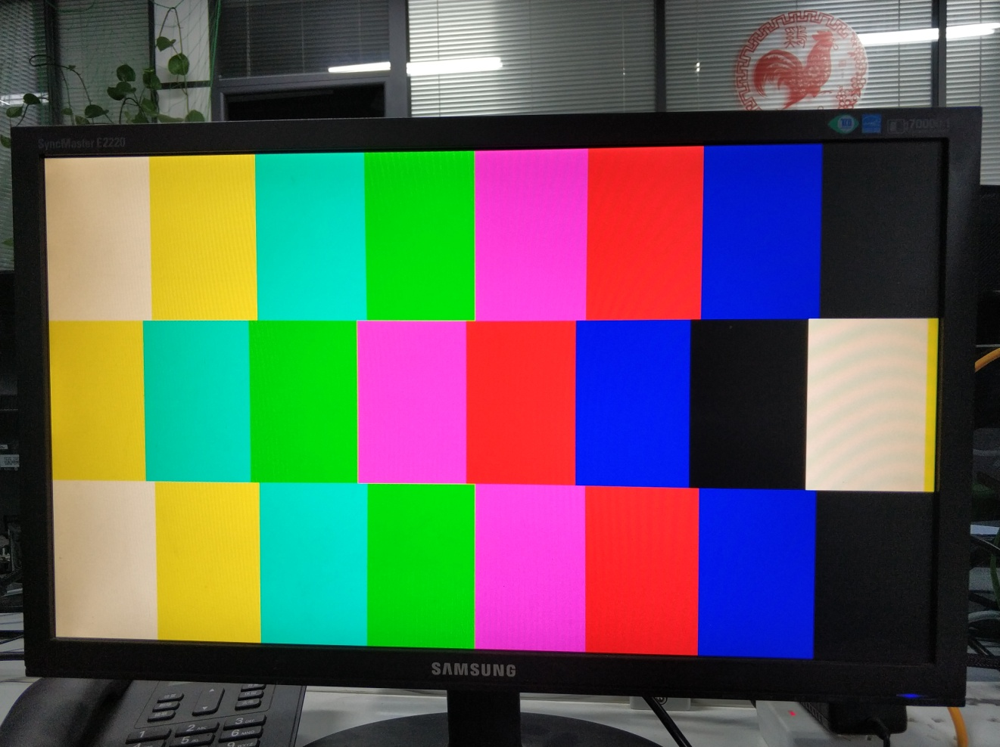

视频彩条#
Vitis HLS视频开发#
与OpenCV关系#
开源计算机视觉 (OpenCV) 被广泛用于开发计算机视觉应用,它包含2500多个优化的视频函数的函数库并且专门针对台式机处理器和GPU进行优化。OpenCV的用户成千上万,OpenCV的设计无需修改即可在 Zynq器件的ARM处理器上运行。但是利用OpenCV实现的高清处理经常受外部存储器的限制,尤其是存储带宽会成为性能瓶颈,存储访问也会限制功耗效率。使用VivadoHLS高级语言综合工具,可以轻松实现OpenCV C++视频处理设计到RTL代码的转换,输出硬件加速器或者直接在FPGA上实现实时视频处理功能。同时,Zynq All-programmable SOC是实现嵌入式计算机视觉应用的极好方法,很好解决了在单一处理器上实现视频处理性能低功耗高的限制。
OpenCV图像处理是基于存储器帧缓存而构建的,它总是假设视频frame数据存放在外部DDR 存储器中,因此,OpenCV对于访问局部图像性能较差,因为处理器的小容量高速缓存性能不足以完成这个任务。而且出于性能考虑,基于OpenCV设计的架构比较复杂,功耗更高。在对分辨率或帧速率要求低,或者在更大的图像中对需要的特征或区域进行处理是,OpenCV似乎足以满足很多应用的要求,但对于高分辨率高帧率实时处理的场景下,OpenCV很难满足高性能和低功耗的需求。
基于视频流的架构能提供高性能和低功耗,链条化的图像处理函数能减少外部存储器访问,针对视频优化的行缓存和窗口缓存比处理器高速缓存更简单,更易于用FPGA部件,使用VivadoHLS中的数据流优化来实现.
Vitis HLS对OpenCV的支持,不是指可以将OpenCV的函数库直接综合成RTL代码,而是需要将代码转换为可综合的代码,这些可综合的视频库称为HLS视频库,由Vitis HLS提供。
OpenCV函数不能直接通过HLS进行综合,因为OpenCV函数一般都包含动态的内存分配、浮点以及假设图像在外部存储器中存放或者修改。
Vitis HLS视频库用于替换很多基本的 OpenCV函数,它与OpenCV具有相似的接口和算法,主要针对在FPGA架构中实现的图像处理函数,包含了专门面向FPGA的优化,比如定点运算而非浮点运算（不必精确到比特位）,片上的行缓存（line buffer）和窗口缓存(window buffer)。
Vitis HLS视频库函数#
HLS视频库是包含在hls命名空间内的C++代码。使用时需要包含头文件“hls_video.h”。
该库与OpenCV等具有相似的接口和等效的行为,例如：
OpenCV库：cvScale(src, dst, scale, shift);
HLS视频库：xf::hls:Scale<…>(src, dst, scale, shift);
一些构造函数具有类似的或替代性的模板参数,例如：
OpenCV库：xf::cv::Mat<XF_8UC3,IMG_MAX_ROWS,IMG_MAX_COLS,XF_NPPC1>;
HLS视频库：xf::cv::xfMat2AXIvideo mat(rows, cols);
实验介绍#
在图像处理中,我们常用彩条(colorbar)来验证视频输出接口,或作为无视频时的输出方案。我们这里的colorbar,为8个不同颜色的竖条,中间三分之一的竖条,从左至右滚动,其它区域静止。且输出的图像,可以动态修改分辨率。
HLS IP创建#
前期准备#
自从2020.1版本开始,vitis_hls对于图像处理常用的算法函数需要额外从赛灵思官方github上下载,网址为：Xilinx/Vitis_Libraries,下载完成之后解压,如果要用到其中的函数我们按照如下步骤进行操作
打开vitis_hls ,点击图标
选择综合
单击edit CFLAGS
输入-I+安装的Vitis_Libraries文件夹路径+-std=c++0x,这里输入的是绝对路径
单击ok,接下来就可以调用需要的库函数对图像进行对应的处理
源代码#
#include "colorbar.h"
template<int ROWS, int COLS>
void createColorBar(xf::cv::Mat<XF_8UC3,ROWS,COLS,XF_NPPC1> &imgColorbar)
{
XF_TNAME(XF_8UC3,XF_NPPC1) pixel;
int move, wBar;
int rows = imgColorbar.rows;
int cols = imgColorbar.cols;
static int moving = 0;
for(int row=0;row<rows;row++)
{
#pragma HLS loop_flatten off
if( (row < rows/3) || (row >= rows/3*2) )
{
move = 0;
}
else
{
move = moving;
}
wBar = cols>>3;
for(int col=0;col<cols;col++)
{
#pragma HLS pipeline
int index = ((col+move)/wBar)&0x7;
switch(index)
{
case 0:
pixel.range(7,0) = 0xff;
pixel.range(15,8) = 0xff;
pixel.range(23,16) = 0xff; //white
break;
case 1:
pixel.range(7,0) = 0x00;
pixel.range(15,8) = 0xff;
pixel.range(23,16) = 0xff; //yellow
break;
case 2:
pixel.range(7,0) = 0xff;
pixel.range(15,8) = 0xff;
pixel.range(23,16) = 0x00; //cyan
break;
case 3:
pixel.range(7,0) = 0x00;
pixel.range(15,8) = 0xff;
pixel.range(23,16) = 0x00; //green
break;
case 4:
pixel.range(7,0) = 0xff;
pixel.range(15,8) = 0x00;
pixel.range(23,16) = 0xff; //magenta
break;
case 5:
pixel.range(7,0) = 0x0;
pixel.range(15,8) = 0x0;
pixel.range(23,16) = 0xff; //red
break;
case 6:
pixel.range(7,0) = 0xff;
pixel.range(15,8) = 0x00;
pixel.range(23,16) = 0x00; //blue
break;
default:
pixel.range(7,0) = 0x00;
pixel.range(15,8) = 0x00;
pixel.range(23,16) = 0x00; //black
break;
}
imgColorbar.write(row*cols+col,pixel);
}
}
if(!moving)
{
moving = cols;
}
else
{
moving--;
}
}
void colorbar(pixel_stream &dst, int rows, int cols)
{
#pragma HLS INTERFACE axis port=dst
#pragma HLS INTERFACE s_axilite port=rows
#pragma HLS INTERFACE s_axilite port=cols
#pragma HLS INTERFACE s_axilite port=return
#pragma HLS INTERFACE ap_ctrl_none port=return
#pragma HLS dataflow
xf::cv::Mat<XF_8UC3,IMG_MAX_ROWS,IMG_MAX_COLS,XF_NPPC1>imgColorbar;
createColorBar<IMG_MAX_ROWS,IMG_MAX_COLS>(imgColorbar);
xf::cv::xfMat2AXIvideo(imgColorbar, dst);
}
接口介绍#
数据类型pixel_stream的定义为hls::stream< ap_axiu<24,1,1,1> > 。这是HLS的流接口,其中24指RGB数据位宽共24Bit,其它位为流控制信号。通常,各模块之间视频数据接口都使用流接口。这里,我们将“dst”定义为视频输出流。
“rows”与“cols”分别定义输出图像的高与宽,”mode”用于表明当前是否处于配置状态,若处于配置状态,则不输出图像。这里,我们使用axi-lite来管理这些接口,包括模块的控制接口。
xf::cv::Mat介绍#
OpenCV中常见的与图像操作有关的数据容器有Mat,CvMat和IplImage,这三种类型都可以代表和显示图像,但是,Mat类型侧重于计算,数学性较高,openCV对Mat类型的计算也进行了优化。而CvMat和IplImage类型更侧重于“图像”,opencv对其中的图像操作（缩放、单通道提取、图像阈值操作等）进行了优化。M at类型较CvMat与IplImage类型来说,有更强的矩阵运算能力,支持常见的矩阵运算。在计算密集型的应用当中,将CvMat与IplImage类型转化为Mat类型将大大减少计算时间花费。
Vitis HLS视频处理函数库使用xf::cv::Mat<>数据类型,这种类型用于模型化视频像素流处理,在HLS实现OpenCV的设计中,需要将输入和输出HLS可综合的视频设计接口,修改为Video stream接口,也就是采用HLS提供的video接口可综合函数,实现AXI4 video stream到VivadoHLS中hls::Mat<>类型间的转换。
在本例程中,我们在顶层函数中定义了xf::cv::Mat<XF_8U3,1080, 1920, XF_NPPC1> imgColorbar。其中,前面的尖括号内分别表示我们的图像最大支持分辨率为1920x1080,bit24的图像,后面括号参数表示当前实际的高与宽分别为rows、cols。
优化#
在顶层函数colorbar中,我们使用了语句” #pragma HLS dataflow” ,以使能够在下面的函数中,形成流水操作,提高数据处理效率。
在createColorBar中,在第一个for循环内嵌入” #pragma HLS loop_flatten off”,表明放弃与内部for循环整合,这样会增加时钟周期,但改善了信号延迟。
工程路径#
名称 |
路径 |
|---|---|
vivado 工程 |
vivado/colorbar |
HLS工程 |
hls/colorbar |
BOOT.bin文件 |
bootimage |
实验结果#
显示一个colorbar,中间部分滚动显示。
需要注意,显示输出分辨率在不断变化,所以画面会隔一段时间黑掉,属于正常现象。